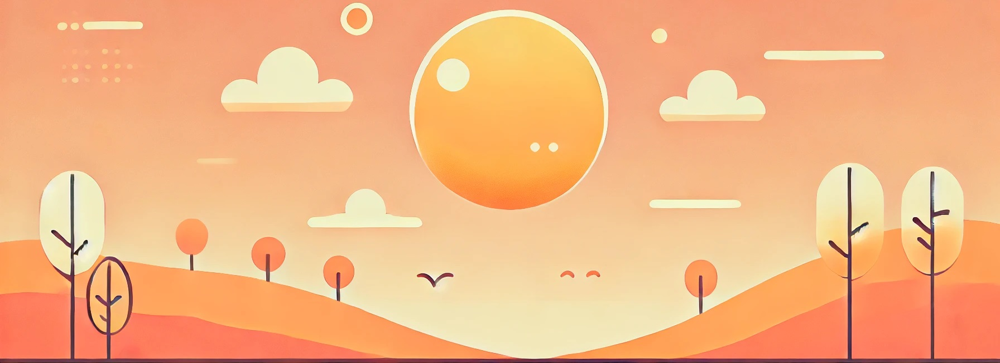

Types of Homeschooling Approaches

1. Traditional Approach
What it is:
Closely mimics public or private school at home.
Curriculum:
Uses textbooks, worksheets, and a set schedule.
Best for:
Families new to homeschooling or those who want structure.
Pros:
Easy to follow, clear expectations, often aligned with state/national standards.
Cons:
Can feel rigid; may not cater to individual learning speeds.
2. Classical Education
What it is:
Based on the ancient trivium - grammar, logic, and rhetoric.
Curriculum:
Focuses on language, critical thinking, memorization, and logic.
Best for:
Parents seeking a strong academic and literary foundation.
Pros:
Develops strong reasoning and communication skills.
Cons:
Can be intense and may feel outdated to some.
3. Charlotte Mason Method
What it is:
Gentle approach emphasizing nature, literature, and art.
Curriculum:
Uses "living books" instead of textbooks; includes nature journaling and short lessons.
Best for:
Creative, nature-loving families.
Pros:
Cultivates curiosity, character, and love for learning.
Cons:
Less emphasis on testing and formal academics.
4. Montessori Method
What it is:
Child-centered learning with hands-on, self-directed activities.
Curriculum:
Uses specialized materials; focuses on independence and life skills.
Best for:
Young children and tactile learners.
Pros:
Encourages independence, self-discipline, and real-world skills.
Cons:
Requires specific materials and can be costly.
5. Unschooling
What it is:
Child-led learning without a set curriculum or schedule.
Curriculum:
Life itself is the curriculum - learning through play, exploration, and interests.
Best for:
Free-spirited or alternative families who trust natural learning.
Pros:
Highly flexible, respects individual interests and timing.
Cons:
Can lack structure; may be hard to measure progress for some parents.
6. Eclectic / Relaxed Homeschooling
What it is:
A mix of different methods tailored to the family or child.
Curriculum:
Picks and chooses from traditional, online, Montessori, etc.
Best for:
Families wanting flexibility without committing to one philosophy.
Pros:
Adaptable, creative, personalized.
Cons:
May lack consistency or long-term structure.
7. Unit Studies
What it is:
Integrates multiple subjects into a single theme or topic.
Curriculum:
One central theme includes reading, science, art, writing, and math activities.
Best for:
Multi-age households and kids who love hands-on learning.
Pros:
Fun, immersive, ideal for diverse ages.
Cons:
Requires planning; not ideal for test prep.
8. Waldorf Education
What it is:
Focuses on creativity, imagination, and developmental stages.
Curriculum:
Emphasizes storytelling, handwork, art, and delayed academics.
Best for:
Families who value rhythm, natural materials, and holistic development.
Pros:
Nurtures imagination, emotional intelligence, and creativity.
Cons:
Less focus on early academics and technology.
9. Virtual Schooling
What it is:
Education delivered through accredited online platforms.
Curriculum:
Structured, grade-based programs with virtual classes and assessments.
Best for:
Families who want accredited education with flexibility.
Pros:
Convenient, offers teacher support, often aligned with national standards.
Cons:
Screen-heavy, less flexibility in pace and content.
10. Road/Worldschooling
What it is:
Learning through travel, real-life experiences, and cultural immersion.
Curriculum:
Life-based learning often supplemented by online or flexible curricula.
Best for:
Nomadic, adventurous, or traveling families.
Pros:
Culturally rich, real-world learning.
Cons:
Less structure, inconsistent internet/access, legal considerations in some countries.
Read ☛ ☛ Homeschooling 101